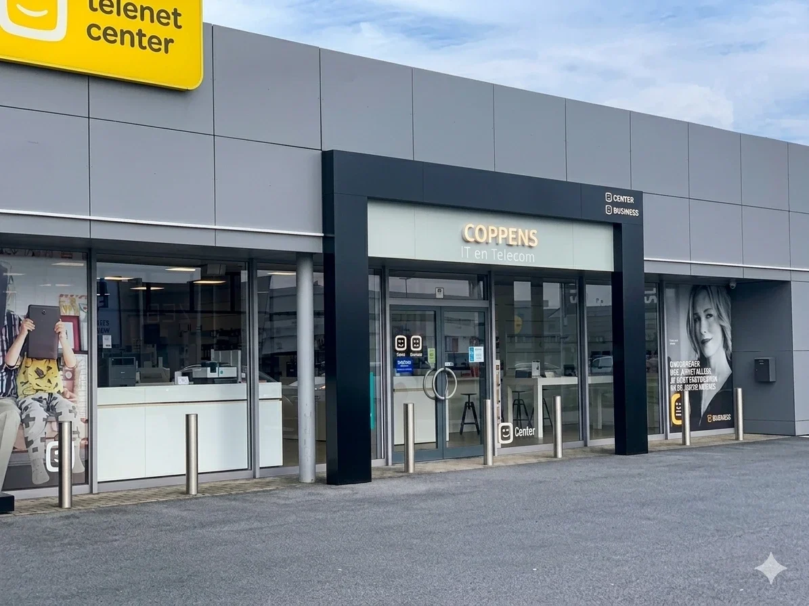

Over ons
Uw vertrouwde IT-partner
in Maldegem
Persoonlijk advies, vakkundige herstellingen en eerlijke prijzen - al meer dan 25 jaar voor particulieren en bedrijven.
Wie zijn wij?
Meer dan een computerwinkel
Cittel Computercentrum - officieel Coppens Computercenter BV - is al meer dan 25 jaar het adres in Maldegem voor alles wat met IT te maken heeft. Wat begon als een kleine computerwinkel groeide uit tot een volwaardig IT-servicecentrum.
Wij helpen iedereen: van de particulier die zijn laptop wil laten herstellen, tot de zelfstandige die een betrouwbare netwerkoplossing nodig heeft, en de KMO die op zoek is naar een degelijke telefonie- of cloudoplossing. Geen vraag is te klein, geen probleem te groot.
Persoonlijk contact staat bij ons centraal. U spreekt altijd met een vaste medewerker die uw situatie kent - geen callcenter, geen wachtrijen.

ervaring
Wat onze klanten zeggen
Beoordelingen van Google
Enkele van onze reviews
Super goede service, ze helpen denken en zoeken naar oplossingen. Er werkte een programma van Siemens Tia portal niet op mijn pc, andere software blokkeerde deze installatie. Nu werkt dit in een virtuele machine. Heel erg bedankt voor jullie hulp en de goede snelle service.
Deze Telenet winkel legt hier duidelijk de nadruk op de optimale bediening van de klant. De bedoeling is om buiten te stappen als een héél tevreden klant. Wat natuurlijk met zich meebrengt dat als je in de rij staat, wat langer moet wachten. Maar eenmaal je aan de beurt verdwijnt die irritatie als sneeuw voor de zon.
Super bediening , niets is te veel en de heer Adriatik heeft alles met veel zorg en met veel geduld met pc problemen terug opgelost .hier is service TROEF
Heel tevreden over de persoonlijke en klantvriendelijke benadering. Ook dank aan Tibo voor zijn begrijpelijke en adequate ondersteuning en uitleg.
Zoals steeds is het vriendelijk personeel weeral bereid om voor serieuze problemen een oplossing te willen zoeken. Een redpunt ook voor mensen met it-problemen. Hardware daar kopen zou ik zeggen, dienst na veekoop verzekerd !
Snel, vlot en vriendelijk geholpen. Top wij komen zeker terug zowel voor telenet hulp als voor aankoop van nieuwe laptop.
Swipe om meer te zien
Onze diensten
Benieuwd wat we concreet voor u kunnen doen?
Van snelle herstellingen tot volledige IT-ondersteuning voor kmo's: op onze dienstenpagina ziet u meteen welke oplossing past bij uw situatie.